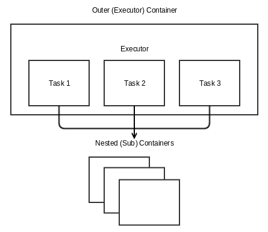

Requests for pods in Apache Mesos goes back to a JIRA Epic opened in 2015: [MESOS-2449] - Support group of tasks (Pod) constructs and API in Mesos. The Epic includes dozens of issues, which enable Mesos to schedule containers together on single hosts, when a framework requests it. On the 10th of November 2016 Apache Mesos 1.1.0 was released, and included support for pods under the name “task groups”.
The ability to allocate resources to multiple containers at once isn’t the only prerequisite for pods on Mesos; Frameworks has to be able to schedule those containers together as well. This meant building new functionality into Marathon, which shipped in version 1.4.0 on the 17th of February 2017.
With the release of DC/OS 1.9 we are happy to announce that pods are available to DC/OS users. Here’s how they work!
DC/OS Pods: What are they good for?
By default, when you launch a container with a job or service in it, DC/OS puts the container on any node that has the resources that you request, allowing you to remain agnostic to the physical location of containers in your cluster. Historically, you could only influence container placement with constraints and resources, which specify particular node hostnames, nodes attributes, and node resources for your containers. You couldn’t guarantee that any two containers would be scheduled on the same node without specifying exactly which node, until now.
Pods provide a solution to this problem. A set of containers can now be co-located on the same node, where they can share resources like network namespace and storage volumes. Additionally, containers are linked in health checks, so that if a container in a pod fails a health check or goes unresponsive, all containers in the pod can be restarted or relocated together to another node.
Pods can be particularly valuable if your application depends on support services that need to be co-located with your main application, such as a log scraper or analytics service. They can also be important for supporting containerization of legacy applications, which sometimes involves separating co-dependent components of a monolithic application into multiple separate containerized microservices that still need to share disk or localhost.
In a recent blog post, Amr Abdelrazik provided a more comprehensive overview of the use cases for pods, which you can read at Introducing Pods in DC/OS 1.9.
Pod Internals
To run a pod using Mesos and Marathon, you first have to define it. Pods are configured for Marathon using JSON pod definitions, which look similar to Marathon application definitions, except that they can list multiple containers, referred to as sub-containers, which define the tasks you will want to run together.
To schedule a pod, Marathon converts the pod definition into Mesos task group definitions and accepts offers that have sufficient resources and match the pod constraints. The number of task groups created depends on the number of instances specified in the pod definition; each pod instance gets its own new task group.
Once an offer is accepted, the Mesos master tells the appropriate Mesos agent to launch the task groups assigned to the offer. The Mesos agent, using the Universal Container Runtime, launches a new task group executor for each task group. Like other executors, the task group executor is itself a container. Unlike other executors, the task group executor can manage multiple tasks as sub-containers that share the executor container’s namespace and resources.

To learn more about pods in Marathon, check out the documentation.
Using Pods in DC/OS 1.9
In the DC/OS GUI, pods are handled and visually represented as types of Services, along with apps. As such, you can deploy or create a pod by running a new Service in the DC/OS GUI and selecting the Multi-container (Pod) option.
{kind=link}
Because pods are configured with JSON pod definitions, you can also use the JSON Configuration option on the Run a Service page to configure a pod, just like you would for an app. The new pods Quick Start for DC/OS 1.9 provides a simple example of a pod definition, and you can view more pod definitions in the Examples.
Once a pod is up and running, you can view its status in the DC/OS GUI just like any other service. By clicking on your pod in the list of services, you will be taken to the pod detail page where you can view the pod instances and the sub-containers within each pod instance, along with their statuses.
{kind=link}
Both the DC/OS CLI and REST API also support pods. If you were using the pod with multiple containers example, shown in the screenshot above, you would create a pod using the CLI by entering:
dcos marathon pod add a-pod-with-multiple-containers.json
You should get back:
Created deployment 75630ae1-5912-4747-94b9-08f888f01363
To view a list of running and stopped pods, you can use:
dcos marathon pod list
You can also remove, show, and update pods in the CLI by referencing the pod ID:
dcos marathon pod remove [--force] <pod-id>
dcos marathon pod show <pod-id>
dcos marathon pod update [--force] <pod-id>
See Using Pods for specific usage of each of these commands.
Conclusion
Pods is considered experimental in DC/OS release 1.9.0, and is exclusively supported by the Universal Container Runtime. Pod features currently on the roadmap for future releases include: ordered container start times within a Pod, and Bridge Mode networking support.
To further explore pods in this release, refer to the documentation, which includes a Quick Start, Technical Overview, Using Pods and Examples.